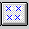

<HTML>
<HEAD>
<META HTTP-EQUIV="CONTENT-TYPE" CONTENT="TEXT/HTML; CHARSET=UTF-8">
<TITLE>Using the Tool Buttons</TITLE>
<STYLE>
PRE {
  FONT-FAMILY: Consolas, "Lucida Console", "Courier New", Courier, MONOSPACE;
}
</STYLE>
</HEAD>
<BODY>
<H1>Using the Tool Buttons</H1><!-- entering slot 319 -->
<P>
A tool bar has been provided for easier access to frequently used features.
 Not all buttons are displayed in the windows.  To display buttons in a
window, enable the<B> Tool buttons</B> choice that is listed under the<B> Options
</B>menu. The following is a list of features that are provided:<!-- lm: 0x2 1 -->
<UL>
<P>
<!-- Unable to decode bitmap format --><!-- lm: 0x12 21 -->
<UL><B>Step
over</B> executes the current line in the program.  If the current line
is a call, execution is halted when the call is completed.<!-- lm: 0x2 1 -->
</UL><!-- Unable to decode bitmap format --><!-- lm: 0x12 21 -->
<UL><B> Step
into</B> executes the current line in the program.  If the current line
is a call, execution is halted at the first statement in the called function.
<!-- lm: 0x2 1 -->
</UL><!-- Unable to decode bitmap format --><!-- lm: 0x12 21 -->
<UL><B>Step
debug</B> executes the current line in the program. The debugger steps over
any function for which debugging information is not available (for example,
library and system routines) and steps into any function for which debugging
information is available.<!-- lm: 0x2 1 -->
</UL><!-- Unable to decode bitmap format --><!-- lm: 0x12 21 -->
<UL><B> Step
return</B> automatically executes the lines of code up to and including
the return statement of the current function.<!-- lm: 0x2 1 -->
</UL><!-- Unable to decode bitmap format --><!-- lm: 0x12 21 -->
<UL><B> Run
</B>allows you to start and stop the program.
<P>
When the debugger is running, the<B> Run</B> button is disabled and the
<B>Halt</B> button<!-- Unable to decode bitmap format --> is
enabled. You can click on the<B> Halt</B> button to halt the program execution.
 You can also interrupt the program you are debugging by selecting the<B> Halt
</B>choice from the<B> Run</B> menu.<!-- lm: 0x2 1 -->
</UL><!-- Unable to decode bitmap format --><!-- lm: 0x12 21 -->
<UL><B> View
</B>changes the current source window to one of the other source windows.
For example, you can change from the Disassembly window to the Mixed window.
<!-- lm: 0x2 1 -->
</UL><!-- Unable to decode bitmap format --><!-- lm: 0x12 21 -->
<UL><B>Monitor
Expression</B> displays the Monitor Expression window, which allows you
to type in the name of the expression you want to monitor.<!-- lm: 0x2 1 -->
</UL><!-- Unable to decode bitmap format --><!-- lm: 0x12 21 -->
<UL><B> Call
Stack</B> displays the Call Stack window, which allows you to view all of
the active functions for a particular thread including the system calls.
The functions are displayed in the order that they were called.<!-- lm: 0x2 1 -->
</UL><!-- Unable to decode bitmap format --><!-- lm: 0x12 21 -->
<UL><B> Registers
</B>displays the Registers window, which allows you to view all the processor
and coprocessor registers for a particular thread.<!-- lm: 0x2 1 -->
</UL><!-- Unable to decode bitmap format --><!-- lm: 0x12 21 -->
<UL><B> Storage
</B>displays the Storage window, which shows the storage contents and the
address of the storage.<!-- lm: 0x2 1 -->
</UL><!-- Unable to decode bitmap format --><!-- lm: 0x12 21 -->
<UL><B> Breakpoints
</B>displays the Breakpoints List window, which allows you to view all the
breakpoints that have been set.<!-- lm: 0x2 1 -->
</UL><!-- Unable to decode bitmap format --><!-- lm: 0x12 21 -->
<UL><B> Passthru
</B>displays the Passthru window, which allows you to send commands and
receive responses from KDB directly.<!-- lm: 0x2 1 -->
</UL><!-- Unable to decode bitmap format --><!-- lm: 0x12 21 -->
<UL><B> Debug
Session Control</B> displays the Debug Session Control window.<!-- lm: 0x2 1 -->
</UL><!-- Unable to decode bitmap format --><!-- lm: 0x12 21 -->
<UL><B> Growth
direction</B> allows you to change the direction that items are displayed
on the stack.<!-- lm: 0x2 1 -->
</UL><!-- Unable to decode bitmap format --><!-- lm: 0x12 21 -->
<UL><B> Delete
</B>allows you to delete the highlighted item.<!-- lm: 0x2 1 -->
</UL><!-- Unable to decode bitmap format --><!-- lm: 0x12 21 -->
<UL><B> Delete
all</B> allows you to delete all the items in the window.<!-- lm: 0x2 1 -->
</UL><!-- Unable to decode bitmap format --><!-- lm: 0x12 21 -->
<UL><B> 32-float
</B>displays the storage contents as a 32-bit floating point.<!-- lm: 0x2 1 -->
</UL><!-- Unable to decode bitmap format --><!-- lm: 0x12 21 -->
<UL><B> 64-float
</B>displays the storage contents as a 64-bit floating point.<!-- lm: 0x2 1 -->
</UL><!-- Unable to decode bitmap format --><!-- lm: 0x12 21 -->
<UL><B> 32-bit
unsigned</B> displays the storage contents as a 32-bit unsigned integer.
<!-- lm: 0x2 1 -->
</UL><!-- Unable to decode bitmap format --><!-- lm: 0x12 21 -->
<UL><B>32-bit
signed</B> displays the storage contents as a 32-bit signed integer.<!-- lm: 0x2 1 -->
</UL><!-- Unable to decode bitmap format --><!-- lm: 0x12 21 -->
<UL><B> ASCII
</B>displays the storage contents in ASCII.<!-- lm: 0x2 1 -->
</UL><!-- Unable to decode bitmap format --><!-- lm: 0x12 21 -->
<UL><B> Hex
and ASCII</B> displays the storage contents in Hex and ASCII.<!-- lm: 0x2 1 -->
</UL><!-- Unable to decode bitmap format --><!-- lm: 0x12 21 -->
<UL><B> Change
representation</B> allows you the change the data representation.<!-- lm: 0x2 1 -->
</UL><!-- lm: 0x2 3 -->
<UL>
<P>
<LI><!-- lm: 0x2 6 -->Refer to <A HREF="306_L3_ExecutingaProgram.html">Executing
a Program</A> for information on step commands.<!-- lm: 0x2 3 --> <!-- lm: 0x2 6 -->
<UL>Refer
to <A HREF="307_L3_SettingBreakpoints.html">Setting Breakpoints</A> for
information on breakpoints.<!-- lm: 0x2 1 -->
</UL>

<P><HR>

<A HREF="304_L2_FrequentlyUsedFeatur.html">[Back: Frequently Used Features of the Debugger]</A> <BR>
<A HREF="306_L3_ExecutingaProgram.html">[Next: Executing a Program]</A> 
</BODY>
</HTML>
